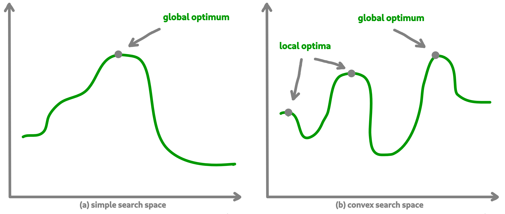

8. Optimisation process¶
Let us now tackle the interesting part concerning the search for optimum solutions in our research space.
8.1. Find local and global optima¶
Overall, in an optimization process, we will seek to find the best, or the best solutions that minimize or maximize our objective function (fitness score obtained) in order to respond to our problem.
{kind=link}
Sometimes, the search space can be very simple. A local search can provide access to the global optimum as shown in figure (a) above. In other cases, the search space is more complex. It may be necessary to explore more rather than exploit in order to get out of a convex zone and not find the global optimum but only a local opmatime solution. This problem is illustrated in figure (b).
8.2. Abstract algorithm class¶
An abstract class is proposed within Macop to generalize the management of an algorithm and therefore of a heuristic.
It is located in the macop.algorithms.base module.
We will pay attention to the different methods of which she is composed. This class enables to manage some common usages of operation research algorithms:
initialization function of solution
validator function to check if solution is valid or not (based on some criteria)
evaluation function to give fitness score to a solution
operators used in order to update solution during search process
policy process applied when choosing next operator to apply
callbacks function in order to do some relative stuff every number of evaluation or reload algorithm state
parent algorithm associated to this new algorithm instance (hierarchy management)
She is composed of few default attributes:
initialiser: {function} – basic function strategy to initialise solution
evaluator: {Evaluator} – evaluator instance in order to obtained fitness (mono or multiple objectives)
operators: {[Operator]} – list of operator to use when launching algorithm
policy: {Policy} – Policy instance strategy to select operators
validator: {function} – basic function to check if solution is valid or not under some constraints
maximise: {bool} – specify kind of optimisation problem
verbose: {bool} – verbose or not information about the algorithm
currentSolution: {Solution} – current solution managed for current evaluation comparison
bestSolution: {Solution} – best solution found so far during running algorithm
callbacks: {[Callback]} – list of Callback class implementation to do some instructions every number of evaluations and load when initialising algorithm
parent: {Algorithm} – parent algorithm reference in case of inner Algorithm instance (optional)
class Algorithm():
def __init__(self,
initialiser,
evaluator,
operators,
policy,
validator,
maximise=True,
parent=None,
verbose=True):
...
def addCallback(self, callback):
"""
Add new callback to algorithm specifying usefull parameters
"""
...
def resume(self):
"""
Resume algorithm using Callback instances
"""
...
def getParent(self):
"""
Recursively find the main parent algorithm attached of the current algorithm
"""
...
def setParent(self, parent):
"""
Set parent algorithm to current algorithm
"""
...
def initRun(self):
"""
initialise the current solution and best solution using the `initialiser` function
"""
...
def increaseEvaluation(self):
"""
Increase number of evaluation once a solution is evaluated for each dependant algorithm (parents hierarchy)
"""
...
def getGlobalEvaluation(self):
"""
Get the global number of evaluation (if inner algorithm)
"""
...
def getGlobalMaxEvaluation(self):
"""
Get the global max number of evaluation (if inner algorithm)
"""
...
def stop(self):
"""
Global stopping criteria (check for parents algorithm hierarchy too)
"""
...
def evaluate(self, solution):
"""
Evaluate a solution using evaluator passed when intialize algorithm
"""
...
def update(self, solution):
"""
Apply update function to solution using specific `policy`
Check if solution is valid after modification and returns it
"""
...
def isBetter(self, solution):
"""
Check if solution is better than best found
"""
...
def run(self, evaluations):
"""
Run the specific algorithm following number of evaluations to find optima
"""
...
def progress(self):
"""
Log progress and apply callbacks if necessary
"""
...
The notion of hierarchy between algorithms is introduced here. We can indeed have certain dependencies between algorithms.
The methods increaseEvaluation, getGlobalEvaluation and getGlobalMaxEvaluation ensure that the expected global number of evaluations is correctly managed, just like the stop method for the search stop criterion.
The evaluate, update and isBetter will be used a lot when looking for a solution in the search space.
In particular the update function, which will call the policy instance to generate a new valid solution.
isBetter method is also overloadable especially if the algorithm does not take any more into account than a single solution to be verified (verification via a population for example).
The initRun method specify the way you intialise your algorithm (bestSolution and currentSolution as example) if algorithm not already initialised.
Note
The initRun method can also be used for intialise population of solutions instead of only one best solution, if you want to manage a genetic algorithm.
Most important part is the run method. Into abstract, the run method only initialised the current number of evaluation for the algorithm based on the parent algorithm if we are into inner algorithm.
It is always mandatory to call the parent class run method using super().run(evaluations). Then, using evaluations parameter which is the number of evaluations budget to run, we can process or continue to find solutions into search space.
Warning
The other methods such as addCallback, resume and progress will be detailed in the next part focusing on the notion of callback.
8.3. Local search algorithm¶
We are going to carry out our first local search algorithm within our search space. A local search consists of starting from a solution, then applying a mutation or crossover operation to it, in order to obtain a new one. This new solution is evaluated and retained if it is better. We will speak here of the notion of neighborhood exploration. The process is then completed in the same way. The local search ends after a certain number of evaluations and the best evaluated solution obtained is returned.
Let’s implement an algorithm well known under the name of hill climber best improvment inheriting from the mother algorithm class and name it HillClimberBestImprovment.
"""
module imports
"""
from macop.algorithms.base import Algorithm
class HillClimberBestImprovment(Algorithm):
def run(self, evaluations):
"""
Run a local search algorithm
"""
# by default use of mother method to initialise variables
super().run(evaluations)
# initialise current solution and best solution
self.initRun()
solutionSize = self._currentSolution.size
# local search algorithm implementation
while not self.stop():
for _ in range(solutionSize):
# update current solution using policy
newSolution = self.update(self._currentSolution)
# if better solution than currently, replace it
if self.isBetter(newSolution):
self._bestSolution = newSolution
# increase number of evaluations
self.increaseEvaluation()
# stop algorithm if necessary
if self.stop():
break
# set new current solution using best solution found in this neighbor search
self._currentSolution = self._bestSolution
return self._bestSolution
Our algorithm is now ready to work. As previously, let us define two operators as well as a random choice strategy. We will also need to define a solution initialisation function so that the algorithm can generate new solutions.
"""
Problem instance definition
"""
elements_score = [ 4, 2, 10, 1, 2 ] # worth of each object
elements_weight = [ 12, 1, 4, 1, 2 ] # weight of each object
# evaluator instance
evaluator = KnapsackEvaluator(data={'worths': elements_score})
# valid instance using lambda
validator = lambda solution: sum([ elements_weight[i] * solution.getdata = )[i] for i in range(len(solution.getdata = )))]) <= 15
# initialiser instance using lambda with default param value
initialiser = lambda x=5: BinarySolution.random(x, validator)
# operators list with crossover and mutation
operators = [SimpleCrossover(), SimpleMutation()]
# policy random instance
policy = RandomPolicy(operators)
# maximizing algorithm (relative to knapsack problem)
algo = HillClimberBestImprovment(initialiser, evaluator, operators, policy, validator, maximise=True, verbose=False)
# run the algorithm and get solution found
solution = algo.run(100)
print(solution.fitness)
Note
The verbose algorithm parameter will log into console the advancement process of the algorithm is set to True (the default value).
8.4. Exploratory algorithm¶
As explained in figure (b) of section 8.1, sometimes the search space is more complicated due to convex parts and need heuristic with other strategy rather than a simple local search.
The way to counter this problem is to allow the algorithm to exit the exploitation phase offered by local search. But rather to seek to explore other parts of the research space. This is possible by simply carrying out several local searches with our budget (number of evaluations).
The idea is to make a leap in the search space in order to find a new local optimum which can be the global optimum. The explained process is illustrated below:

We are going to implement a more specific algorithm allowing to take a new parameter as input. This is a local search, the one previously developed. For that, we will have to modify the constructor a little.
Let’s called this new algorithm IteratedLocalSearch:
"""
module imports
"""
from macop.algorithms.base import Algorithm
class IteratedLocalSearch(Algorithm):
def __init__(self,
initialiser,
evaluator,
operators,
policy,
validator,
localSearch,
maximise=True,
parent=None,
verbose=True):
super().__init__(initialiser, evaluator, operators, policy, validator, maximise, parent, verbose)
# specific local search associated with current algorithm
self._localSearch = localSearch
# need to attach current algorithm as parent
self._localSearch.setParent(self)
def run(self, evaluations, ls_evaluations=100):
"""
Run the iterated local search algorithm using local search
"""
# by default use of mother method to initialise variables
super().run(evaluations)
# initialise current solution
self.initRun()
# local search algorithm implementation
while not self.stop():
# create and search solution from local search (stop method can be called inside local search)
newSolution = self._localSearch.run(ls_evaluations)
# if better solution than currently, replace it
if self.isBetter(newSolution):
self._bestSolution = newSolution
self.information()
return self._bestSolution
In the initialization phase we have attached our local search passed as a parameter with the current algorithm as parent. The goal is to touch keep track of the overall search evaluation number (relative to the parent algorithm).
Then, we use this local search in our run method to allow a better search for solutions.
"""
Problem instance definition
"""
elements_score = [ 4, 2, 10, 1, 2 ] # worth of each object
elements_weight = [ 12, 1, 4, 1, 2 ] # weight of each object
# evaluator instance
evaluator = KnapsackEvaluator(data={'worths': elements_score})
# valid instance using lambda
validator = lambda solution: sum([ elements_weight[i] * solution.getdata = )[i] for i in range(len(solution.getdata = )))]) <= 15
# initialiser instance using lambda with default param value
initialiser = lambda x=5: BinarySolution.random(x, validator)
# operators list with crossover and mutation
operators = [SimpleCrossover(), SimpleMutation()]
# policy random instance
policy = RandomPolicy(operators)
# maximizing algorithm (relative to knapsack problem)
localSearch = HillClimberBestImprovment(initialiser, evaluator, operators, policy, validator, maximise=True, verbose=False)
algo = IteratedLocalSearch(initialiser, evaluator, operators, policy, validator, localSearch=local_search, maximise=True, verbose=False)
# run the algorithm using local search and get solution found
solution = algo.run(evaluations=100, ls_evaluations=10)
print(solution.fitness)
Note
These two last algorithms developed are available in the library within the module maocp.algorithms.mono.
We have one final feature to explore in the next part. This is the notion of callback.